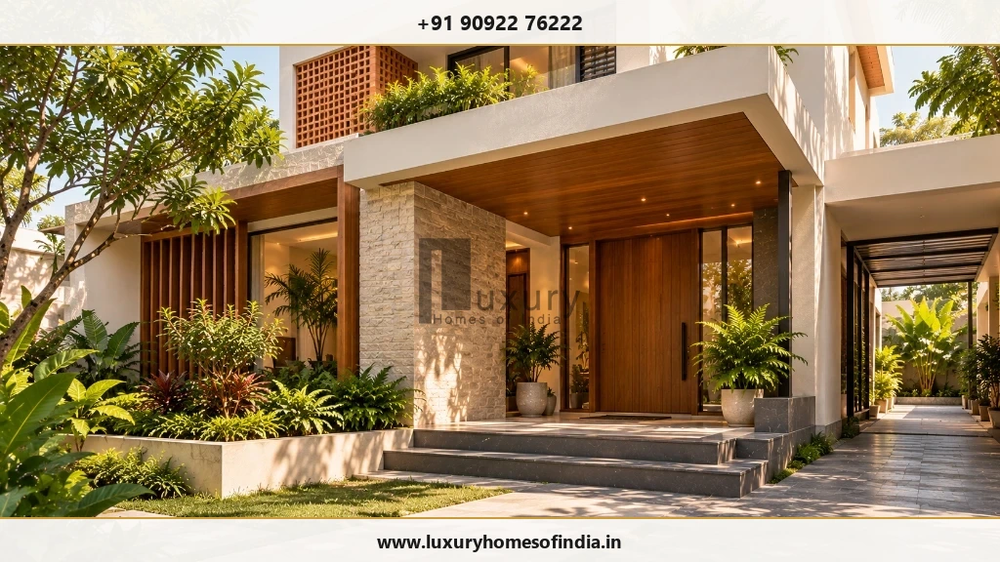
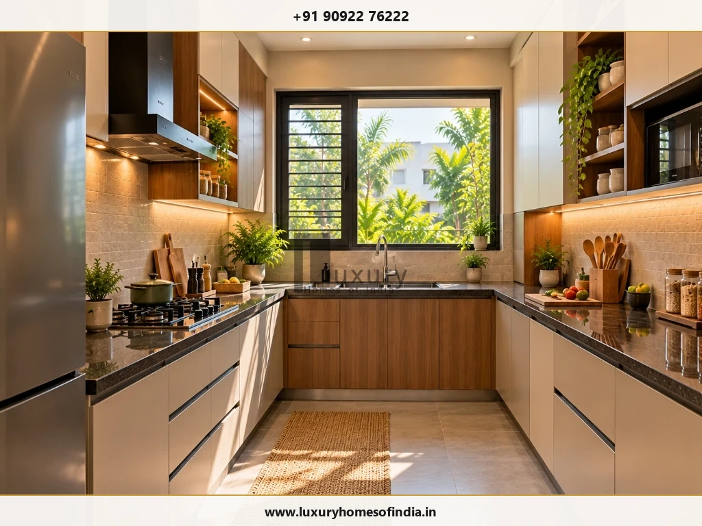
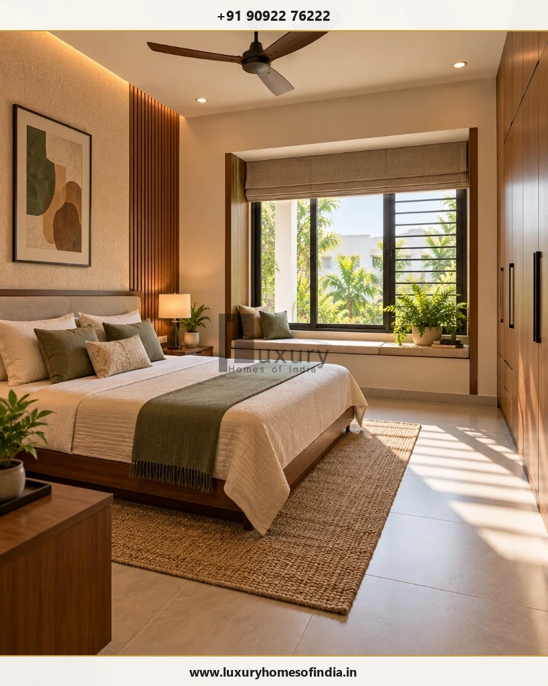
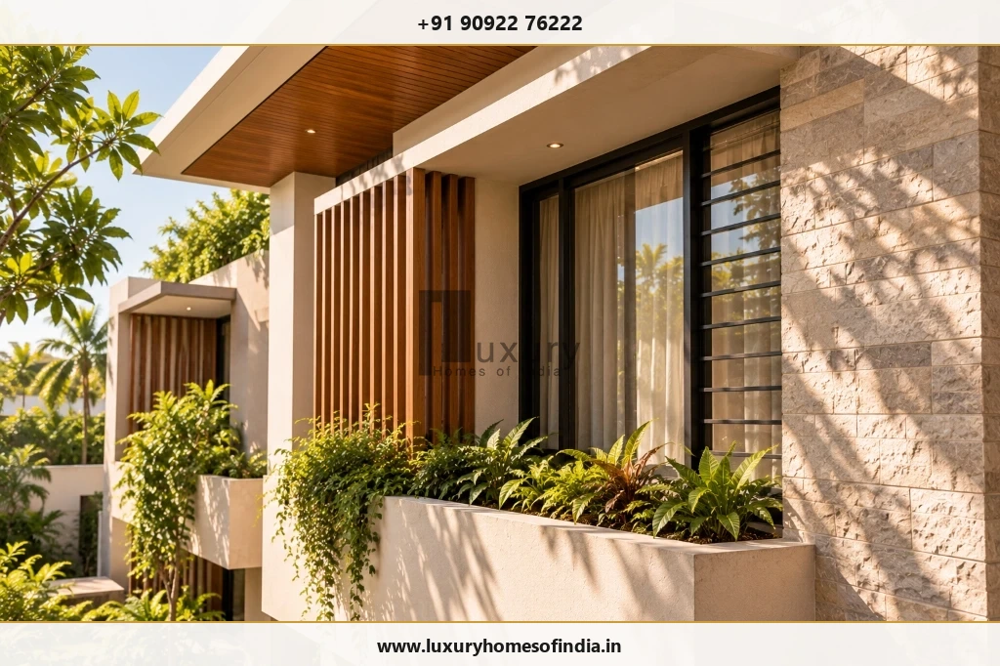
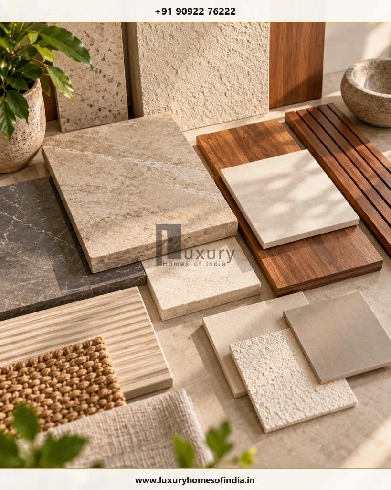

Direct Answer: Vastu vs Modern Design
Choosing between Vastu Shastra and modern architectural design is a common consideration when planning a new home in India. The practical answer is that you can often incorporate selected Vastu preferences into a modern home, provided the layout also meets your family's needs, site constraints, structural requirements and applicable building regulations.
Vastu may influence the preferred entrance, kitchen, bedrooms and pooja room, while contemporary architecture evaluates circulation, natural light, ventilation, privacy, accessibility, durability and cost. Rather than treating Vastu and modern design as opposing choices, use them as part of a structured planning brief that keeps functionality, safety and regulatory compliance at the centre of the design.

For homeowners planning a house in Chennai, the best approach is to discuss cultural preferences before finalising the concept plan. This gives the architect an opportunity to test different room arrangements, assess the site's orientation and surroundings, and coordinate structural and building services.
Not every traditional preference will be feasible on every plot, and a direction alone cannot guarantee comfort or environmental performance. A modern house must be resilient to Chennai's humid coastal climate, structurally engineered for seismic and wind loads, and strictly compliant with local planning authorities like the Greater Chennai Corporation (GCC) and CMDA.
Vastu vs Modern Architecture: What Is the Difference?
Vastu Shastra is a traditional Indian system of architectural and spatial planning that considers factors such as cardinal directions, cosmic energy grids (Vastu Purusha Mandala), entrance thresholds and directional room placement.
Modern architecture uses a wider set of empirical design inputs, including the site's microclimate, occupants' lifestyle needs, building physics, structural engineering, passive cooling performance, material life cycles and statutory regulations.
The approaches can sometimes complement each other remarkably well. For example, traditional preference for morning sun from the east aligns directly with bioclimatic daylight principles. The critical question is whether a preferred arrangement can work well within the actual site geometry and structural grid.
| Design Consideration | Common Vastu Preference | Modern Architectural Consideration |
|---|---|---|
| Main Entrance | Preferred direction (North, East) or auspicious entrance segment (pada). | Road access, parking driveway, privacy from street, foyer circulation, security and tropical rain protection. |
| Kitchen | South-east (Agni corner) is commonly preferred; North-west as secondary alternative. | Ergonomic work triangle, prevailing wind ventilation, heat dissipation, appliance clearances, plumbing and gas line safety. |
| Master Bedroom | South-west (Nairuthi corner) is commonly preferred for stability. | Acoustic privacy, cross-ventilation, wind direction, comfortable furniture clearances, natural light and ensuite plumbing stack. |
| Pooja Room | North-east (Ishanya corner) is commonly preferred for morning light and tranquility. | Family daily rituals, accessibility, serene acoustic isolation, integrated ventilation for incense/lamps, and spatial proportion. |
| Windows & Openings | Directional preferences vary; larger openings often favoured towards north and east. | Daylight factor, prevailing breezes, thermal heat gain, solar glare mitigation, external shading louvers, and visual privacy. |
| Staircase Placement | South, South-west or West directional zones commonly preferred; clockwise ascent. | Structural column grid alignment, safe riser/tread geometry, headroom clearance, fire egress, and efficient floor circulation. |
| Materials & Finishes | Traditional natural materials, earth tones, or aesthetic preferences. | Structural durability, coastal saline air resistance, thermal mass, waterproofing, low maintenance, and life-cycle cost. |
| Statutory Approvals | Vastu does not establish statutory or legal compliance. | Mandatory adherence to Tamil Nadu Combined Development and Building Rules (TNCDBR), setbacks, FSI, parking, and fire safety. |
Note: These are broad comparisons and discussion guides, not universal dogma. Different Vastu practitioners may interpret directional preferences differently, and every plot demands site-specific evaluation.
1. Main Entrance: Balancing Direction and Function
The main entrance connects the street, boundary gate, driveway, porch, foyer and interior living spaces. Some Vastu traditions favour particular directions or entrance segments, depending on the home's orientation and the method followed.
Modern design considers how people approach the house, how the entrance protects against weather, and whether visitors can enter without compromising family privacy in intimate living quarters.
Checklist Before Fixing the Entrance:
- Confirm site geometry: Verify the actual surveyed plot boundaries, road width, and precise true north marked with a magnetic survey.
- Discuss family preferences: Agree on directional entrance goals before drawing the structural column layout.
- Coordinate gate and parking: Ensure vehicular turning radius, ramp slope, and pedestrian pathways align seamlessly with the porch.
- Integrate weather protection: Provide deep overhangs or canopies to guard against Chennai's heavy northeast monsoon downpours and afternoon solar glare.
- Foster natural interior connection: Transition smoothly from an arrival foyer into the formal living area without creating awkward diagonal corridors.
An east-facing entrance may satisfy a homeowner's cultural preference, but its long-term success still depends on practical driveway access, porch shading, security, and the position of neighbouring compound walls.
2. Kitchen Planning: Traditional Preferences and Everyday Use
In traditional Vastu Shastra, the south-east (Agni / fire corner) is strongly favoured for cooking spaces, with the north-west serving as an acceptable alternative. Modern kitchen architecture, however, prioritises ergonomics, appliance ventilation, plumbing routes, and practical workflow.

A practical planning sequence to harmonise both approaches includes:
- Identify the preferred zone: Determine whether the south-east or north-west can accommodate the kitchen within the permitted building footprint.
- Establish the work triangle: Arrange the cooktop, sink, refrigerator, and dry pantry to maintain efficient 4 to 9-foot workflow distances.
- Ensure high-capacity exhaust: Install ducted kitchen chimneys (1200+ m³/hr capacity) venting directly to an external wall to discharge humid cooking oil fumes.
- Coordinate MEP utilities: Position water supply pipes, drainage traps, grease traps, RO purifier points, and dedicated 16A appliance circuits without awkward jogs.
- Verify dining connectivity: Keep the kitchen linked to the dining room and utility wash area without creating direct visual exposure to visitor seating.
If the family prefers to face east while cooking, that arrangement can be easily accommodated during concept drafting. However, it should never compromise counter space, safety clearances around the cooktop, or access to natural ventilation.
3. Bedroom Design: Privacy, Comfort and Room Placement
Traditional Vastu places the master bedroom in the south-west (Nairuthi) to symbolize stability and grounded leadership. Children's bedrooms are often recommended in the west or north-west, while guest rooms occupy the north-west.
Contemporary architecture evaluates bedroom design from the standpoint of human comfort: acoustic privacy from living zones, comfortable furniture clearances, wardrobe storage capacity, cross-ventilation, and access to natural light.

When reviewing bedroom floor plans, homeowners should verify:
- Furniture clearances: Ensure a minimum of 3 feet of clear walking space around the bed, wardrobe doors, and ensuite entry.
- Acoustic separation: Buffer the bedroom from noisy living rooms, TV lounges, kitchens, and external street traffic.
- Ventilation and daylight: Position operable windows to catch prevailing breezes while using double glazing to minimize ambient noise.
- Solar heat management: In Chennai, south-west walls receive intense afternoon solar radiation. Incorporate cavity walls, external vertical louvers, or shaded balconies to prevent excessive heat buildup.
- Ensuite plumbing layout: Align bathroom wet areas with lower-floor plumbing shafts to avoid running drainage lines above quiet living spaces.
4. Natural Light and Ventilation: Assess the Actual Building
Both Vastu and modern green architecture value natural light and cross-ventilation. However, simply placing a window in a traditionally recommended direction does not guarantee a cool, comfortable room.
In Chennai's coastal, tropical climate, thermal comfort is heavily influenced by solar radiation, humidity, and the urban context. An unshaded window facing east or south can cause severe greenhouse heating, driving up air conditioning electricity bills.

Practical Climate Design Checks for Chennai Homes:
- Provide balanced daylight: Bring glare-free daylight into living areas through north-facing clerestory glazing or shaded courtyards.
- Encourage cross-ventilation: Place openings on opposite or adjacent walls to harness Chennai's prevailing south-easterly summer breezes.
- Use deep external shading (Chajjas): Protect glass windows with architectural projections (minimum 600 mm to 900 mm) or vertical motorized louvers.
- Specify high-performance glazing: Use Low-E or double-glazed DGU units on exposed facades to cut solar heat gain coefficient (SHGC) while maintaining light transmission.
- Mitigate roof heat gain: Apply thermal insulation tiles, white reflective roof coatings, or roof gardens above top-floor bedrooms to keep interiors cool.
5. Staircase Placement: Resolve Conflicts Early
Vastu principles traditionally place staircases in the south, south-west, or west zones of the house, recommending that users ascend in a clockwise direction.
In modern architectural engineering, a staircase is a major structural element requiring continuous vertical column supports, dedicated headroom clearances, and seamless integration with floor circulation. Placing a heavy concrete or steel staircase in an awkward position can compromise structural efficiency or block internal daylight.
On compact urban plots in Chennai (such as 20×40 ft or 30×40 ft sites), the preferred Vastu staircase zone often clashes with the ideal location for a kitchen, master bedroom, or car porch. Resolving these spatial conflicts during the concept design phase prevents costly structural changes later.
| Staircase Element | Architectural Safety & Engineering Standard | Vastu Planning Guidance |
|---|---|---|
| Tread & Riser | Risers between 150–175 mm; Treads minimum 250–300 mm for safe footing. | Odd number of steps preferred in some traditional texts. |
| Headroom Clearance | Minimum 2.1 m (7 ft) clear vertical headroom throughout the flight. | Avoid low beams directly crossing above user walkways. |
| Under-Stair Space | Ideal for concealed storage, powder room, or electrical utility panels. | Pooja rooms or bedrooms under stairs are strongly discouraged. |
| Flight Direction | Direct path of travel, landing widths matching or exceeding stair width. | Clockwise ascent (turning right while climbing) is commonly favoured. |
6. Materials and Finishes: Prioritise Performance
Cultural traditions often express preferences for natural building materials such as stone, timber, lime, and clay. Modern architectural specifications align with these preferences but evaluate materials through the lens of engineering durability, moisture resistance, maintenance cycles, and cost.

In Chennai's coastal environment, material selection must withstand high atmospheric humidity and saline air:
- Natural Stone: Granite, kota stone, and flamed sandstones perform exceptionally well for external thresholds, steps, and foyers. Marble requires careful sealing against moisture absorption.
- Timber & Joinery: Use seasoned teak, thermo-treated ash, or marine-grade WPC for main doors and exterior claddings to prevent seasonal warping and termite damage.
- Waterproofing Integrity: Aesthetic stone wall claddings must never replace rigorous multi-layer elastomeric waterproofing on terraces, sunken slabs, and retaining walls.
- Metals: Specify SS316 stainless steel or marine-grade powder-coated architectural aluminium for exterior railings and window frames to resist rust.
7. Vastu Planning for Different Plot Sizes in Chennai
Plot dimensions heavily dictate how easily traditional room placements can be integrated without compromising livability. It is essential to remember that the total land area does not equal the permitted building footprint. Mandatory front, rear, and side setbacks must be deducted first.
20 × 40 ft Plot (800 sq ft)
Setbacks and car parking consume a large portion of the ground floor. Accommodating every Vastu preference is challenging. The priority is functional room dimensions, proper ventilation shafts, and structural column alignment. Vertical zoning (living on ground, bedrooms on first) provides the most practical solution.
30 × 40 ft Plot (1,200 sq ft)
Offers flexibility for comfortable 2BHK or 3BHK duplex designs. The south-east kitchen and south-west master bedroom can generally be planned alongside adequate staircase circulation, covered parking, and an east or north entrance foyer.
30 × 50 ft Plot (1,500 sq ft)
Provides generous space to separate public entertaining areas from private suites. Accommodates central internal courtyards (Brahmasthan concept), landscaped side setbacks, double-height living areas, and expansive pooja alcoves.
G+1 & G+2 Independent Villas
Multi-level homes allow vertical zoning: ground floor for foyer, formal living, dining, kitchen, and elder's suite; first floor for private family lounge, master suite, and children's bedrooms. Staircase and lift shafts must be planned from day one.
8. Does Vastu or Modern Design Cost More?
Neither design philosophy inherently costs more than the other. Construction expenditure is determined by the total built-up area, structural specifications, choice of finishes, mechanical services, and site topography.
Where Vastu increases cost is through late redesigns. If a family introduces new directional preferences after structural drawings have been engineered, moving plumbing risers, redesigning columns, or demolishing constructed masonry adds substantial variation costs and delays.
How to Manage Construction Budgets Effectively:
- Document priorities upfront: Note all cultural preferences in the initial architectural brief before concept sketches begin.
- Evaluate alternatives early: Compare at least two spatial layouts on the measured drawing during schematic design.
- Coordinate engineering disciplines: Lock the structural column grid, MEP routes, and architectural openings simultaneously.
- Prepare an itemised Bill of Quantities (BOQ): Specify exact materials and finishes to avoid arbitrary contractor markups.
- Maintain a 10% contingency reserve: Account for foundation soil variations, utility connections, or unforeseen site conditions.
9. Building Approval Requirements in Chennai
It is vital to recognize that traditional Vastu compliance carries no statutory legal standing. A building permit from local planning authorities is mandatory before initiating any construction work in Tamil Nadu.
In Chennai, residential building permissions are governed by the Tamil Nadu Combined Development and Building Rules (TNCDBR). Depending on the plot location, jurisdiction lies with the Greater Chennai Corporation (GCC) or the Chennai Metropolitan Development Authority (CMDA).
Official Planning Portals:
- Greater Chennai Corporation Town Planning: GCC Town Planning Department
- GCC Online Building Plan Approvals: GCC Online Services
- Chennai Metropolitan Development Authority: CMDA Official Portal
Explore our comprehensive regulatory guides for step-by-step documentation details:
10. A Practical Process for Combining Vastu with Modern Architecture
Homeowners can achieve the best of both worlds by following a structured 7-step pre-construction design methodology:
Common Mistakes to Avoid
- Treating Vastu and contemporary architecture as mutually exclusive: Both can work together when viewed as complementary inputs.
- Applying generic online diagrams without checking site reality: Internet plans ignore setbacks, road orientations, neighbouring high-rises, and local wind patterns.
- Sacrificing usable room dimensions: Forcing awkward room proportions or dark internal corridors solely to place a door in a specific segment.
- Assuming a window direction guarantees good comfort: Orientation without external shading louvers causes unbearable solar heat gain in Chennai.
- Altering structural layouts mid-construction: Moving a staircase, kitchen plumbing, or load-bearing column after concrete has been cast causes severe delays and budget overruns.
- Treating traditional beliefs as absolute scientific guarantees: Vastu is a cultural belief system; spatial planning should prioritize occupant safety and livability.
- Neglecting municipal building rules: A plan cannot be built legally without meeting mandatory setbacks and CMDA/GCC building regulations.
Frequently Asked Questions
Plan Your Home with Luxury Homes of India
A well-planned home should reflect your family's preferences while addressing comfort, functionality, durability and statutory building requirements. Considering Vastu preferences early helps identify feasible architectural options before construction drawings are locked.
Written by Luxury Homes of India Editorial
Our architectural and engineering editorial team brings decades of collective experience in luxury residential planning, CMDA/GCC building approvals, and climate-responsive construction across Chennai and Tamil Nadu.
Reviewed by: Senior Technical Director, LHI Architecture & Planning